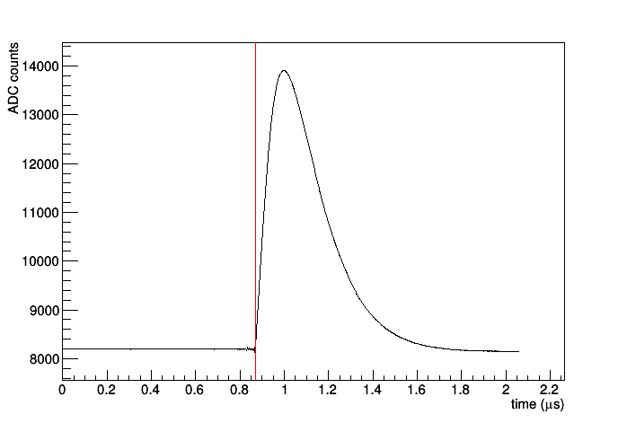
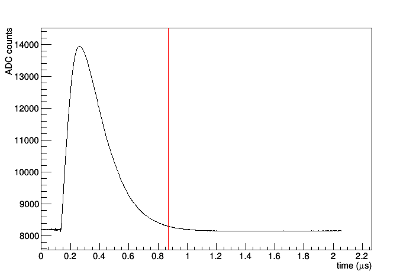
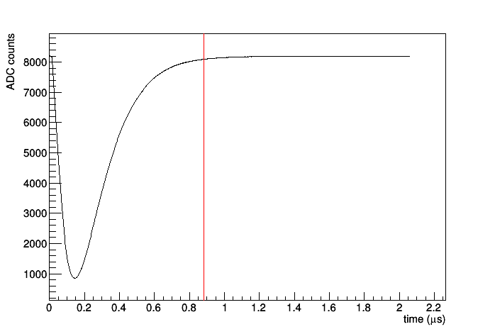
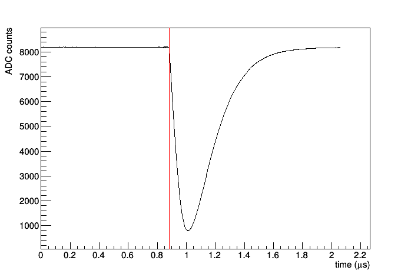
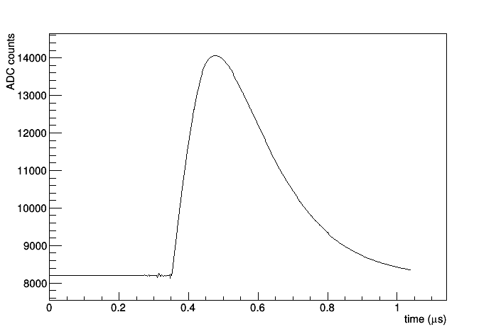
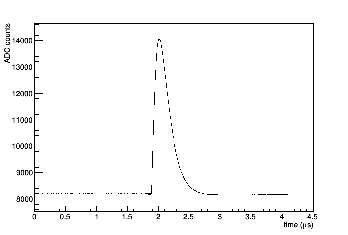
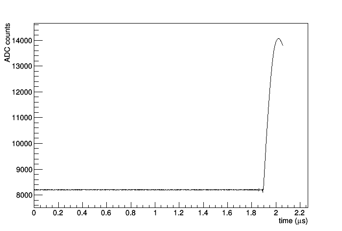
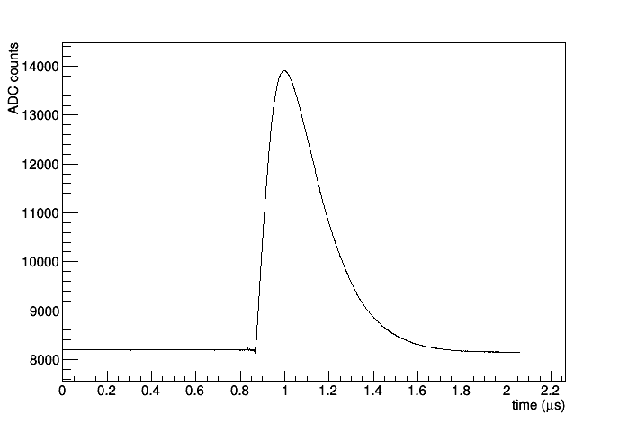
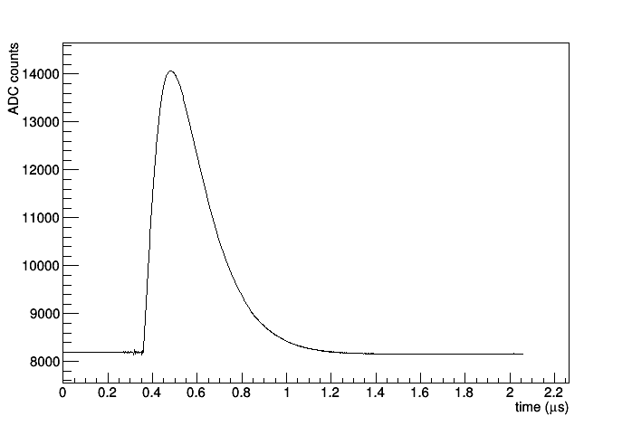
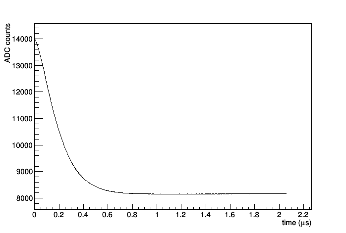

For a positive pulse, polarity
Positive pulse with positive trigger

Trigger will occur when the signal rises above 100. The red line is the trigger point.
Example command line arguments:
CAENdaq -o FILE.root -d 1000 --ch 0 --polarity0 POSITIVE --threshold0 100 --trslope0 POSITIVE
Positive pulse with negative trigger

Trigger will occur when the signal falls below 100. The red line is the trigger point.
Example command line arguments:
CAENdaq -o FILE.root -d 1000 --ch 0 --polarity0 POSITIVE --threshold0 100 --trslope0 NEGATIVE
Negative pulse with positive trigger

Trigger will occur when the signal rises above 100. The red line is the trigger point.
Example command line arguments:
CAENdaq -o FILE.root -d 1000 --ch 0 --polarity0 NEGATIVE --threshold0 100 --trslope0 POSITIVE
Negative pulse with negative trigger

Trigger will occur when the signal falls below 100. The red line is the trigger point.
Example command line arguments:
CAENdaq -o FILE.root -d 1000 --ch 0 --polarity0 NEGATIVE --threshold0 100 --trslope0 NEGATIVE
The record length setting sets the number of samples in a waveform. A higher number will create a longer waveform.
Low record length
In this example the record length is set to 512 samples.

Example command line arguments:
CAENdaq -o FILE.root -d 1000 --ch 0 --reclen 512 --threshold0 100
Medium record length
In this example the record length is set to 1024 samples (the default).
Example command line arguments:
CAENdaq -o FILE.root -d 1000 --ch 0 --reclen 1024 --threshold0 100
High record length
In this example the record length is set to 2048 samples.

Example command line arguments:
CAENdaq -o FILE.root -d 1000 --ch 0 --reclen 2048 --threshold0 100
The post trigger setting sets how much of the waveform will be after the trigger occurs. valid settings are 0 to 100. Setting this to 50 is a good rule of thumb.
Post trigger of 0

Example command line arguments:
CAENdaq -o FILE.root -d 1000 --ch 0 --posttrigger 0 --threshold0 100
Post trigger of 25

Example command line arguments:
CAENdaq -o FILE.root -d 1000 --ch 0 --posttrigger 25 --threshold0 100
Post trigger of 50 (the default setting)

Example command line arguments:
CAENdaq -o FILE.root -d 1000 --ch 0 --posttrigger 50 --threshold0 100
Post trigger of 75

Example command line arguments:
CAENdaq -o FILE.root -d 1000 --ch 0 --posttrigger 75 --threshold0 100
Post trigger of 100

Example command line arguments:
CAENdaq -o FILE.root -d 1000 --ch 0 --posttrigger 100 --threshold0 100